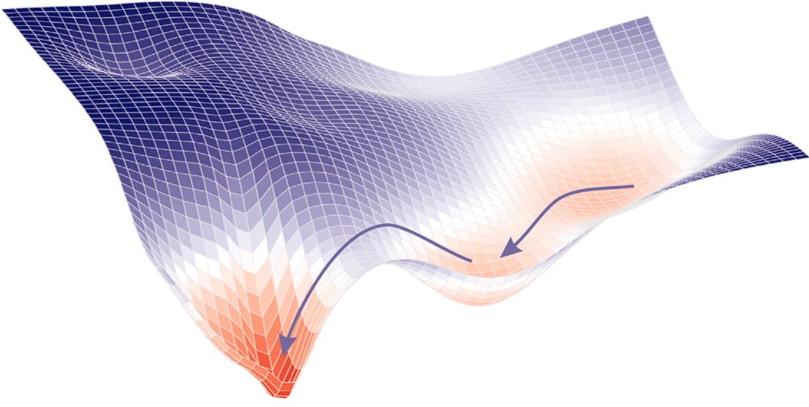
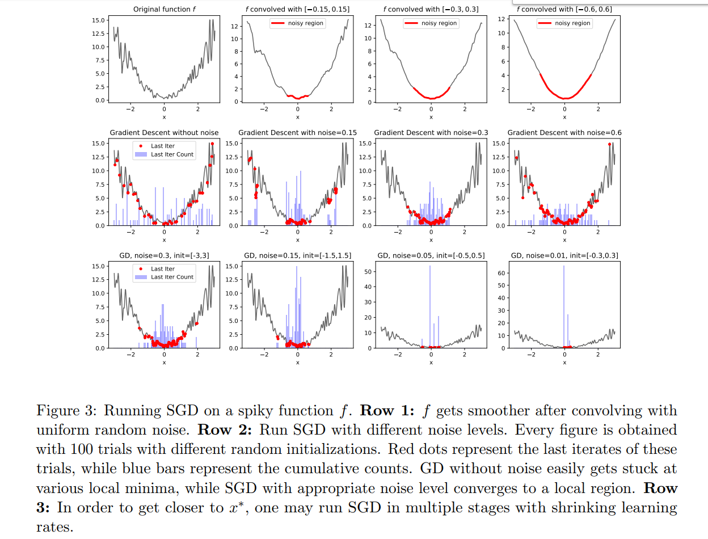
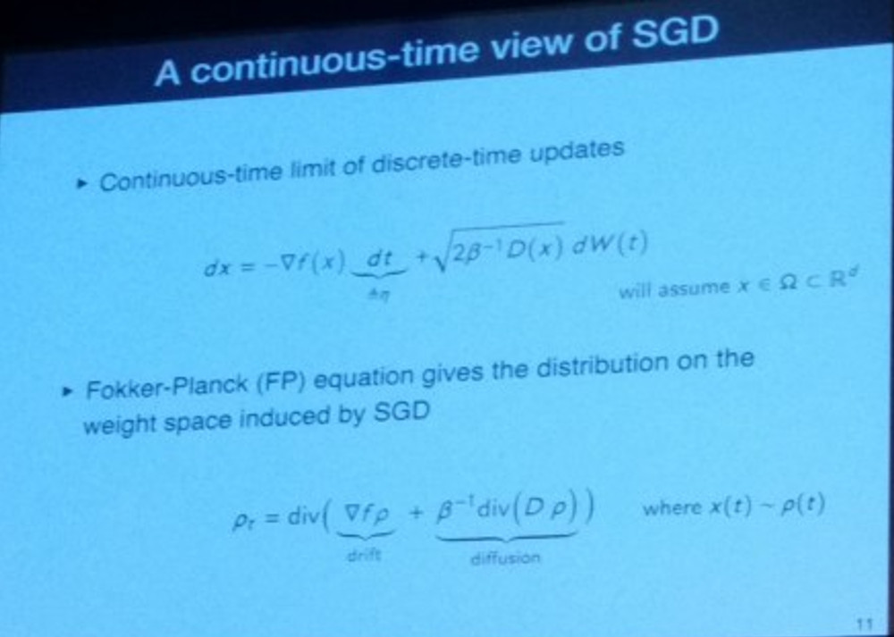
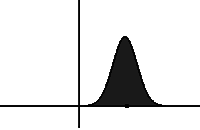

Recent Advances for a Better Understanding of Deep Learning
This post was first published as a Medium Article for Towards Data Science
I would like to live in a world whose systems are built on rigorous, reliable, verifiable knowledge, and not on alchemy. […] Simple experiments and simple theorems are the building blocks that help understand complicated larger phenomena.
This call for a better understanding of deep learning was the core of Ali Rahimi’s Test-of-Time Award presentation at NIPS in December 2017. By comparing deep learning with alchemy, the goal of Ali was not to dismiss the entire field, but “to open a conversation”. This goal has definitely been achieved and people are still debating whether our current practice of deep learning should be considered as alchemy, engineering or science.
Seven months later, the machine learning community gathered again, this time in Stockholm for the International Conference on Machine Learning (ICML). With more than 5,000 participants and 629 papers published, it was one of the most important events regarding fundamental machine learning research. And deep learning theory has become one of the biggest subjects of the conference.

This renew interest was revealed on the first day, with one of the biggest rooms of the conference full of machine learning practitioners ready to listen to the tutorial Towards Theoretical Understanding of Deep Learning by Sanjeev Arora. In his talk, the Professor of computer science at Princeton summarized the current areas of deep learning theory research, by dividing them into four branches:
- Non Convex Optimization: How can we understand the highly non-convex loss function associated with deep neural networks? Why does stochastic gradient descent even converge?
- Overparametrization and Generalization: In classical statistical theory, generalization depends on the number of parameters but not in deep learning. Why? Can we find another good measure of generalization?
- Role of Depth: How does depth help a neural network to converge? What is the link between depth and generalization?
- Generative Models: Why do Generative Adversarial Networks (GANs) work so well? What theoretical properties could we use to stabilize them or avoid mode collapse?
In this series of articles, we will try to build intuition in those four areas based on the most recent papers, with a particular focus on ICML 2018.
This first article will focus on the mysteries of non-convex optimization for deep networks.
Non-Convex Optimization

I bet a lot of you have tried training a deep net of your own from scratch and walked away feeling bad about yourself because you couldn’t get it to perform. I don’t think it’s your fault. I think it’s gradient descent’s fault.
stated Ali Rahimi with a provocative tone in his talk at NIPS. Stochastic Gradient Descent (SGD) is indeed the cornerstone of deep learning. It is supposed to find a solution of a highly non-convex optimization problem, and understanding when it works or not, and why, is one the most fundamental questions we would have to adress in a general theory of deep learning. More specifically, the study of non-convex optimization for deep neural networks can be divided into two questions:
- What does the loss function look like?
- Why does SGD converge?
What does the loss function look like?
If I ask you to visualize a global minimum, it’s very likely that the first representation that will come to your mind will look something like this:

And it’s normal. In a 2D-world, it’s not rare to find problems, where around a global minimum, your function will be strictly convex (which means that the two eigenvalues of the hessian matrix at this point will be both strictly positive). But in a world with billions of parameters, as it is the case in deep learning, what are the odds that none of the directions around a global minimum are flat? Or equivalently that the hessian contains not a single zero (or almost zero) eigenvalue?
One of the first comment of Sanjeev Arora in his tutorial was that the number of possible directions that you can take on a loss function grows exponentially with the dimension.

Then, intuitively, it seems likely that a global minimum will not be a point, but a connected manifold. Which means that if you’ve reached a global minimum, you should be able to walk around on a flat path where all the points are also minima. This has been experimentally proven on large networks by a team at Heidelberg University, in their paper Essentially No Barriers in Neural Network Energy Landscape[1]. They argue an even more general statement, namely that any two global minima can be connected through a flat path.

It was already known to be the case for a CNN on MNIST or an RNN on PTB[2], but this work extended that knowledge to much bigger networks (some DenseNets and ResNets) trained on more advanced datasets (CIFAR10 and CIFAR100). To find this path, they used a heuristic coming from molecular statistical mechanics, called AutoNEB. The idea is to create an initial path (for instance linear) between your two minima, and to place pivots on that path. You then iteratively modify the positions of the pivots, such that it minimizes the loss of each pivot and make sure the distances between pivots stay about the same (by modelling the space between pivots by springs).
If they didn’t prove that result theoretically, they gave some intuitive explanations on why such path exists:
If we perturb a single parameter, say by adding a small constant, but leave the others free to adapt to this change to still minimise the loss, it may be argued that by adjusting somewhat, the myriad other parameters can “make up” for the change imposed on only one of them
Thus, the results of this paper can help us seeing minima in a different way, through the lens of overparametrization and high-dimensional spaces.
More generally, when thinking about the loss function of neural network, you should always have in mind that the number of possible directions at a given point is huge. Another consequence of that is the fact that saddle points must be much more abundant than local minima: at a given (critical) point, among the billions of possible directions, it’s very likely to find one that goes down (if you’re not in a global minimum). This intuition was formalized rigorously and proved empirically in a paper published at NIPS 2014: Identifying and attacking the saddle point problem in high-dimensional non-convex optimization[3]
Why does SGD converge (or not)?
The second important question in optimization of deep neural networks is related to the convergence properties of SGD. While this algorithm has long been seen as a faster but approximate version of gradient descent, we now have evidence that SGD actually converges to better, more general, minima[4]. But can we formalize it and explain quantitatively the capacity of SGD to escape from local minima or saddle points?
SGD modifies the loss function
The paper An Alternative View: When Does SGD Escape Local Minima?[5] showed that performing SGD is equivalent to doing regular gradient descent on a convolved (thus smoothed) loss function. With that point of view and under certain assumptions (shown by the authors to be often true in practice), they prove that SGD will manage to escape local minima and converge to a small region around a global minimum.

SGD is governed by stochastic differential equations
Another approach to SGD that has really changed my vision of this algorithm is continuous SGD. The idea was presented by Yoshua Bengio during his talk On stochastic gradient descent, flatness and generalization, given at the ICML Workshop on Non-Convex Optimization. SGD does not move a point on a loss function, but a cloud of points, or in other words, a distribution.

Slide extracted from the presentation On stochastic gradient descent, flatness and generalization, by Y. Bengio, at ICML 2018. He presented an alternative way to see SGD, where you replace points by distributions (clouds of points)
The size of this cloud of point (i.e. the variance of the associated distribution) is proportional to the factor learning_rate / batch_size. A proof of this is given in the amazing paper by Pratik Chaudhari and Stefano Soatto, Stochastic gradient descent performs variational inference, converges to limit cycles for deep networks[6], that they presented during the Workshop on Geometry in Machine Learning. This formula is quite intuitive: a low batch size means a very noisy gradient (because computed on a very small subset of the dataset), and a high learning rate means noisy steps.
The consequence of seeing SGD as a distribution moving over time is that the equations governing the descent are now stochastic partial differential equations. More precisely, under certain assumptions, [5] showed that the governing equation is actually a Fokker-Planck equation.

Slide extracted from the presentation High-dimensional Geometry and Dynamics of Stochastic Gradient Descent for Deep Networks, by P. Chaudhari and S. Soatto, at ICML 2018. They showed how to pass from a discrete system to a continuous one described by the Fokker-Plank equation
In statistical physics, this type of equations describes the evolution of particles exposed to a drag force (that drifts the distribution, i.e. moves its mean) and to random forces (that diffuse the distribution, i.e. increase its variance). In SGD, the drag force is modeled by the true gradient while the random forces correspond to noise inherent to the algorithm. As you can see in the slide above, the diffusion term is proportional to a temperature term T=1/β=learning_rate/(2*batch_size), which shows once again the importance of this ratio!

Evolution of a distribution under the Fokker-Planck equation. It drifts on the left and diffuses with time. Source: Wikipedia
Using this framework, Chaudhari and Soatto proved that our distribution will monotonically converge to a certain steady distribution (in the sense of the KL-divergence):

One of the main theorems of [5], proving monotonic convergence of the distribution to a steady state (in the sense of the KL divergence). The second equation shows that minimizing F is equivalent to minimizing a certain potential ϕ as well as maximizing the entropy of the distribution (trade-off controlled by the temperature 1/β)
There are several interesting points to comment in the theorem above:
- The functional that is minimized by SGD can be rewritten as a sum of two terms (Eq. 11): the expectancy of a potential Φ, and the entropy of the distribution. The temperature 1/β controls the trade-off between those two terms.
- The potential Φ depends only on the data and the architecture of the network (and not the optimization process). If it is equal to the loss function, SGD will converge to a global minimum. However, the paper shows that it’s rarely the case, and knowing how far Φ is from the loss function will tell you how likely your SGD will converge.
- The entropy of the final distribution depends on the ratio learning_rate/batch_size (the temperature). Intuitively, the entropy is related to the size of a distribution and having a high temperature often comes down to having a distribution with high variance, which usually means a flat minimum. Since flat minima are often considered to generalize better, it’s consistent with the empirical finding that high learning and low batch size often lead to better minima.
Therefore, seeing SGD as a distribution moving over time showed us that learning_rate/batch_size is more meaningful than each hyperparameter separated regarding convergence and generalization. Moreover, it enabled the introduction of the potentiel of a network, related to convergence and that could give a good metric for architecture search.
Conclusion
The quest of finding a deep learning theory can be broken down into two parts: first, building intuitions on how and why it works, through toy models and experiments, then expressing those intuitions into a mathematical form that can help us explaining our current results and making new ones.
In this first article, we tried to convey more intuition of both the high-dimensional loss function of neural networks and the interpretations of SGD, while showing that new kinds of formalism are being built in the objective of having a real mathematical theory of deep neural networks optimization.
However, while non-convex optimization is the cornerstone of deep learning, its success comes mostly from its ability to generalize well despite a huge number of layers and parameters. This will be the object of the next part.
References
Felix Draxler, Kambis Veschgini, Manfred Salmhofer, Fred Hamprecht. Essentially No Barriers in Neural Network Energy Landscape, ICML 2018. ↩︎
C. Daniel Freeman, Joan Bruna. Topology and Geometry of Half-Rectified Network Optimization, arXiv:1611.01540, 2016. ↩︎
Yann Dauphin, Razvan Pascanu, Caglar Gulcehre, Kyunghyun Cho, Surya Ganguli, Yoshua Bengio. Identifying and attacking the saddle point problem in high-dimensional non-convex optimization, NIPS 2014 ↩︎
Nitish Shirish Keskar, Dheevatsa Mudigere, Jorge Nocedal, Mikhail Smelyanskiy, Ping Tak Peter Tang. On large-batch training for deep learning: Generalization gap and sharp minima, ICLR 2017. ↩︎
Robert Kleinberg, Yuanzhi Li, Yang Yuan. An Alternative View: When Does SGD Escape Local Minima?, ICML 2018 ↩︎
Pratik Chaudhari, Stefano Soatto. Stochastic gradient descent performs variational inference, converges to limit cycles for deep network, ICLR 2018 ↩︎